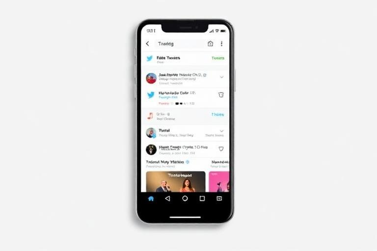
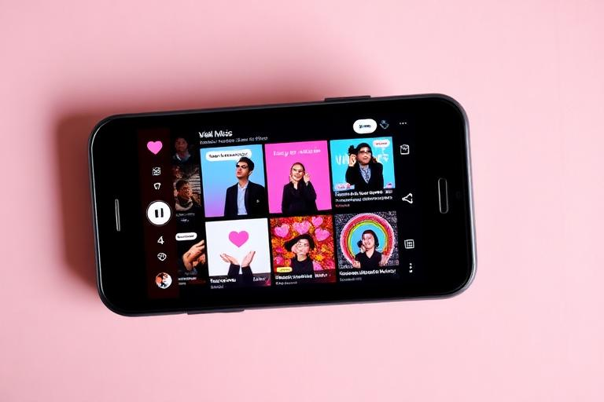
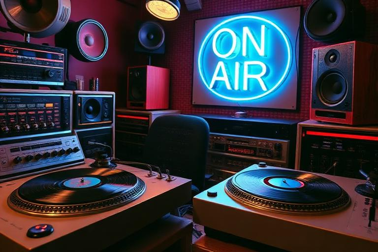

Audience building
Promotion, PR & Media
RockMundo gives you several ways to turn music and activity into public attention: self-promotion, PR opportunities, social platforms and media appearances. The strongest campaigns usually connect these activities to a real reason for people to pay attention—a release, tour, gig, milestone or ongoing story.
In brief
Promote with a purpose. Link attention to an upcoming release, show or career moment, check that timed offers fit your schedule, and treat repeated public activity as a way to build momentum rather than as an isolated button press.
Your main promotion routes
Self-promotion
Direct actions you control. Useful when you need activity around a release or event without waiting for an external offer.
PR opportunities
Career offers and publicity routes that can provide stronger exposure but may have requirements, dates, costs or other commitments.
Media appearances
Radio, websites, magazines, podcasts, television and other outlets can put your character or music in front of different audiences.
Social platforms
Regular posts and interactions help create an ongoing public presence between major releases and gigs.
Build a campaign around something
- Choose the focal point. A single, album, tour date, festival appearance or other real event gives promotion a purpose.
- Start before the moment. Attention created only after an event has passed cannot help people anticipate it.
- Mix channels. Use direct promotion, media and social activity rather than repeating exactly one action forever.
- Keep the schedule realistic. Media and PR offers can occupy time and may require a date or location.
- Watch the response. Fans, fame, streams, sales, offers and chart movement provide signals about whether attention is converting.
PR and media offers
An offer is an opportunity, not an obligation. Before accepting, check its date, location, expected commitment and whether your character is already busy. If the scheduled time has passed or conflicts with another activity, it may no longer be usable.
Attention creates expectations
Fame and reach can unlock larger opportunities, but a bigger audience also means more people judging the next release or performance. Promotion works best when the underlying music and preparation can support the attention it creates.
Social activity and identity



Use social systems to support the identity you are already creating. A band with regular gigs, releases and stories has more meaningful things to talk about than one posting purely to chase a number.